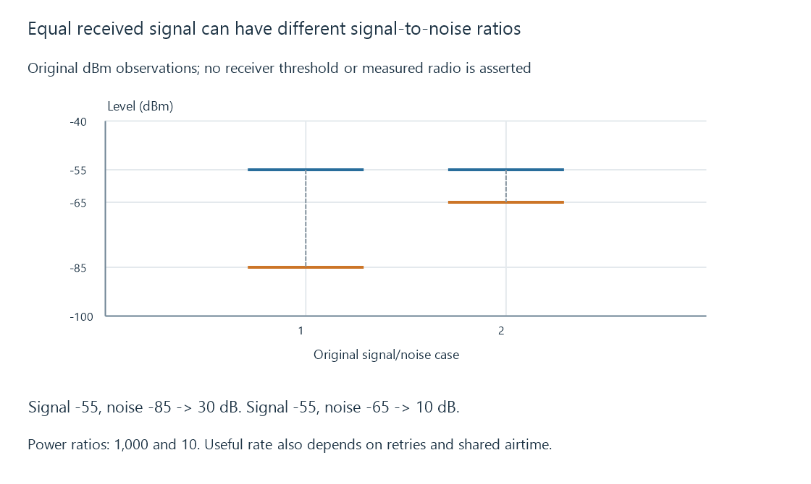

Wi-Fi signal quality, noise and useful airtime
Wi-Fi signal quality combines received signal, interference/noise, selected radio behavior and airtime use, so RSSI alone does not predict useful media throughput.
A television shows a strong Wi-Fi signal yet streams poorly. Received signal strength describes one radio observation; interference, retries and shared airtime can still limit the useful result.
Signal and noise must share a reference
Use these original dBm observations:
{
"cases": [
{"signalDbm": -55, "noiseDbm": -85},
{"signalDbm": -55, "noiseDbm": -65}
]
}
Both cases have the same received signal level. Their modeled signal-to-noise differences are thirty and ten dB.
Thirty dB represents a thousandfold power ratio; ten dB represents tenfold. These are ratio calculations under the stated common measurement reference, not real receiver captures.

A device’s strength percentage may use its own scale. It should not be treated as a calibrated SNR or a universal conversion to a supported bitrate.
The radio chooses an operating representation
Modulation, coding, channel width, spatial streams and supported capabilities influence the selected PHY behavior. Changing channel conditions can change those choices.
A higher reported rate describes a particular link operation. It is not a measurement of continuous new media bytes delivered through the whole path.
Different clients can have different antenna arrangements and supported radio options at the same physical location.
Retries consume useful airtime
For an original reduced exercise, transmitting sixty Mbit at a selected three-hundred-Mbit/s data rate takes 0.2 seconds of data airtime.
If the same complete payload must be transmitted twice before success, the modeled data airtime becomes 0.4 seconds. Its useful-payload ceiling becomes 150 Mbit/s before other overhead.
Actual Wi-Fi access, acknowledgments and retry units add their own behavior. The calculation isolates why repeated transmission can reduce useful rate even with an unchanged strength display.
Other clients and interfering transmissions can also occupy or defer use of the channel. Strong RSSI does not reserve that airtime for Emby.
The two directions can behave differently
The access point’s received client signal and the client’s received access-point signal are separate observations.
Transmit power, antenna behavior and local noise can differ at the two ends. A strong downlink observation does not prove the return direction carrying requests and acknowledgments is equally usable.
Wireless backhaul adds another link behind the access point. Its resources can be the bottleneck even when the TV’s immediate radio link is healthy.
Retain useful-delivery evidence
For a Wi-Fi playback discrepancy, keep the actual client/link, relevant signal/noise interpretation, retries/airtime, selected rates and delivered-media progress together.
See Also
- Wi-Fi frequency bands and link conditions
- Wireless backhaul and repeated airtime
- Packet loss, recovery and media deadlines
- Network throughput and useful delivery rate